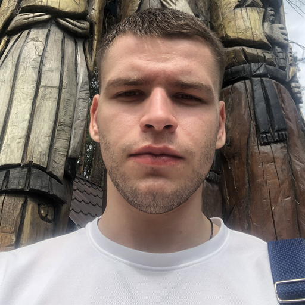

Особисті данні
Ім'я: Суворкін Владислав
Дата народження: 27.09.2000
Електронна пошта: suvorkin.phonk@gmail.com
Telegram: https://t.me/FRXSTMXRN
Мови: Українська, Англійська
Інтереси: Спорт, музика
Ім'я: Суворкін Владислав
Дата народження: 27.09.2000
Електронна пошта: suvorkin.phonk@gmail.com
Telegram: https://t.me/FRXSTMXRN
Мови: Українська, Англійська
Інтереси: Спорт, музика
Маю досвід роботи 2 роки та по цей час працюю в колівінг компанії як помічник головного інженера. Базово володію HTML та CSS, проходив курс початківця QA інженера. Прагну досягти успіхів в навчанні, покращити навички, здобути нові фундаментальні знання для того, щоб стати кваліфікованим спеціалістом у галузі фронт енд розробки.